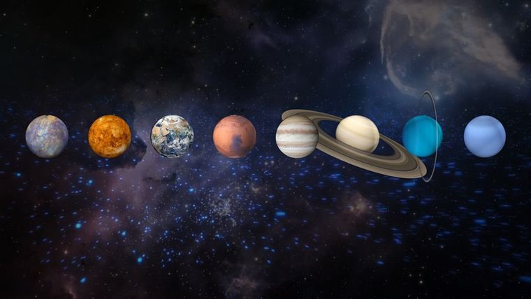
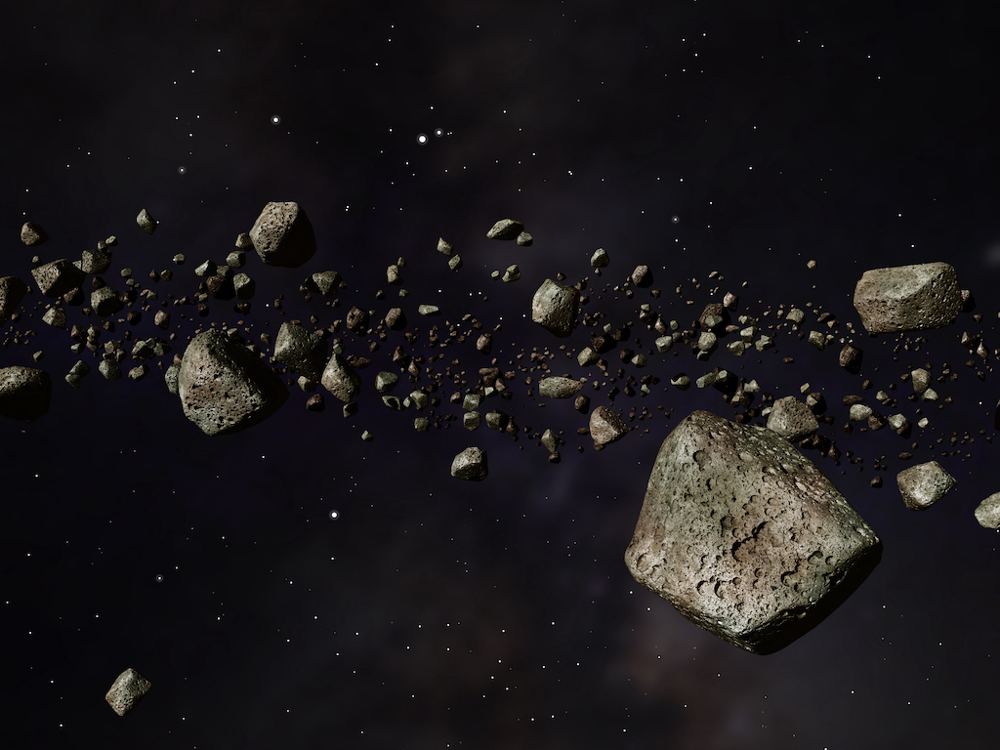
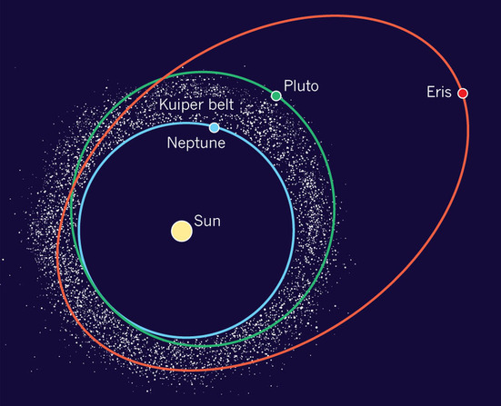
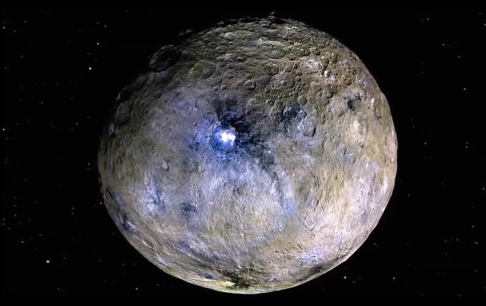
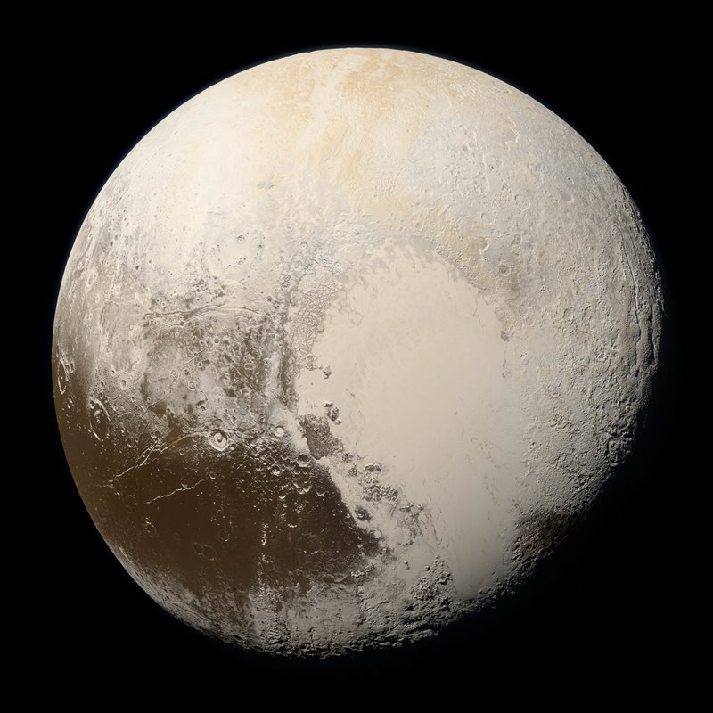
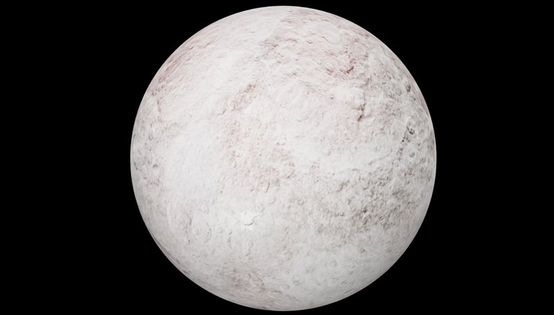
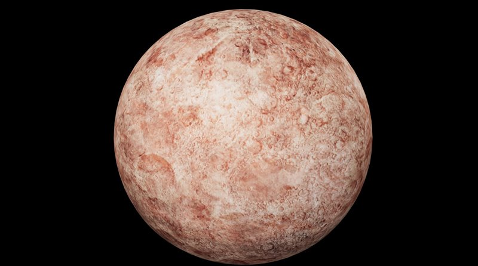
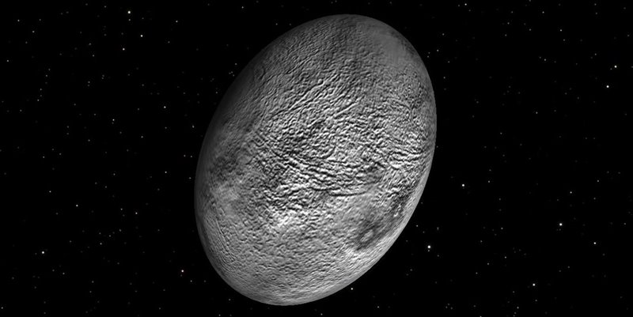
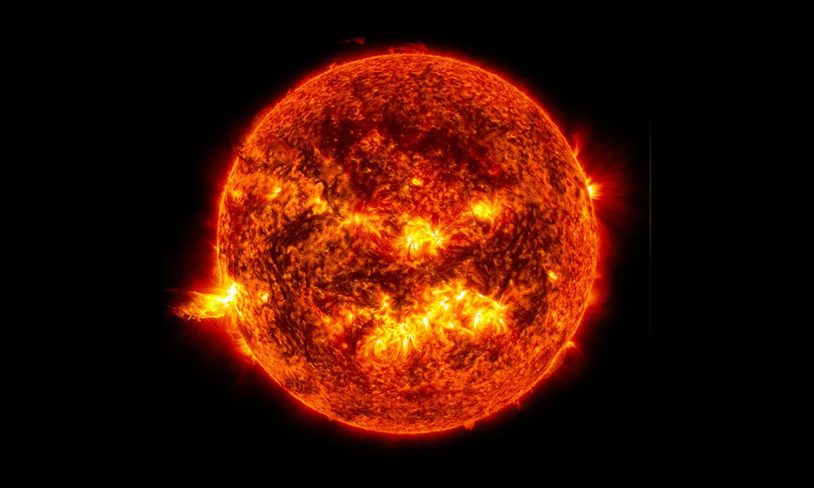

SISTEMA SOLAR
Sistema solar
 Nuestro sistema solar alberga a ocho sorprendentes planetas. Algunos son pequeños y rocosos, otros son grandes y gaseosos. Algunos son tan calientes que, sobre su superficie, los metales se fundirían. Otros son tan fríos como el hielo.
Constantemente estamos aprendiendo cosas nuevas sobre nuestros planetas vecinos. Enviamos sondas espaciales a tomar fotografías, recolectar información y averiguar más sobre esos planetas.
Entre los demás objetos que integran el sistema solar se encuentran los asteroides (objetos espaciales rocosos que pueden tener kilómetros de diámetro) y los meteoroides (pequeños fragmentos de materia, similares a la piedra o al metal). Estos elementos se pueden encontrar, por ejemplo, en el Cinturón de Asteroides, una región entre las órbitas de Marte y Júpiter.
Finalmente, los cometas, cuerpos de hielo, polvo y gas que viajan a miles de kilómetros por hora por el espacio, también mantienen su propia órbita alrededor del Sol. La NASA estima que existen más de 100 mil millones de cometas en el sistema solar.
Cómo está formado el Sistema Solar
Principalmente, está compuesto por el Sol y los elementos que lo orbitan. Ubicado en un brazo exterior de la Vía Láctea, alberga mucho más que a la Tierra y que a otros planetas conocidos.El Sol, la estrella principal de este entramado espacial, está en el centro de la organización de los elementos, tiene forma elíptica (ovalada), y es el objeto espacial más grande del sistema: representa 99% de la masa total.
Es precisamente su gran tamaño lo que hace que el Sol genere una tremenda atracción gravitacional sobre los otros elementos del sistema, haciéndolos orbitar alrededor de él.
Posteriormente te mostraremos algunos elementos muy importantes que lo conforman
Cinturón de Asteroides

¿Qué es un asteroide?
Los asteroides son pequeños objetos rocosos que orbitan alrededor del Sol. Aunque los asteroides den vueltas alrededor del Sol como los planetas, son mucho más pequeños.¿Qué es el cirturon de asteroides?
Es un disco circunestelar del sistema solar que se encuentra entre las órbitas de Marte y Júpiter. Alberga multitud de objetos astronómicos, denominados asteroides, y el planeta enano Ceres.¿Dé dondé provienen?
Hay muchos asteroides en nuestro sistema solar. La mayoría de ellos viven en el cinturón de asteroides una región entre las órbitas de Marte y Júpiter. Los asteroides son los restos de la formación de nuestro sistema solar. Nuestro sistema solar apareció hace unos 4600 millones de años, con el derrumbe de una gran nube de gas y polvo. Cuando esto sucedió, la mayor parte del material cayó al centro de la nube y formó el Sol. Parte del polvo en condensación dentro de la nube se convirtió en los planetas. Los objetos del cinturón de asteroides nunca tuvieron la oportunidad de incorporarse a los planetas, y son restos de ese tiempo lejano en el que se formaron los planetas.
Caracteristicas
- Los asteroides no son redondos como planetas. Tienen formas dentadas e irregulares.
- Algunos asteroides tienen cientos de kilómetros de diámetro, pero la mayoría son tan pequeños como una pelota.
- La mayoría están hechos de diferentes tipos de roca, pero algunos contienen arcilla o metal, como el níquel y el hierro.
Planetas enanos

¿Qué es un planeta enano?
La locución planeta enano fue creada por la Unión Astronómica Internacional para definir toda una nueva clase de cuerpos celestes que no pueden categorizarse como planetas o cuerpo menor del sistema solar. Fue introducido en la resolución de la UAI del 24 de agosto de 2006 para los cuerpos del sistema solar.
Caracteristicas
- Son idénticos en casi todo a un planeta, pero existe una diferencia fundamental: un planeta enano no ha "echado a sus vecinos" de su órbita, lo cual significa que no se hecho gravitatoriamente dominante y comparte su espacio orbital con otros cuerpos celestes de similar tamaño.
¿Cuáles estan reconocidos?
Ceres
 El planeta enano Ceres fue nombrado en honor el nombre a la diosa de la agricultura, las cosechas y la fecundidad. De hecho, la palabra cereal procede del mismo nombre. Se trata del unos de los 5 planetas enanos del sistema solar, y situado en el cinturón de asteroides, es el planeta enano el qué más cerca se encuentra del Sol, por lo que también cuenta con el honor de ser el primer planeta enano visitado por una nave espacial, la sonda espacial Dawn de la NASA.
El caso de Ceres es un tanto particular, ya que hasta al año 2006 había sido considerado un asteroide más del cinturón de asteroides. De hecho es el más grande de todos los objetos que se encuentran entre Marte y Júpiter, y alberga hasta el 25% de la masa del propio cinturón. Los científicos también describen a Ceres como un "planeta embrionario", pues creen que se trató de un potencial planeta que no terminó de formarse del todo debido a la influencia gravitatoria de Júpiter, el planeta más grande del sistema solar. Pero si Ceres resulta tan especial, es por que tiene agua, por lo que se sitúa como uno de los grandes candidatos del sistema solar en los que científicos planean buscar signos de vida en el futuro.
Plutón
 Plutón es mundo muy frío que se encuentra a una temperatura media de unos -240 ºC. Este planeta enano, además, se vuelve mucho más frío durante la parte del año en que se aleja del Sol, momento en el que incluso puede nevar nieve de metano, la cual es de color rojo.
Otra característica extraña Plutón es su órbita, la cual, a diferencia del resto de planetas, es a la vez elíptica e inclinada, y en algunos momentos, debido a su gran excentricidad, puede llegar a estar más cerca del Sol que Neptuno. Al igual que Venus y Urano, exhibe también una rotación retrógrada, es decir, el sol sale por el oeste y se pone por el este.
Plutón tiene 5 lunas, de las cuales la más importante es Caronte, tan grande que orbita junto a Plutón como si se tratara de un sistema binario de planetas. Las otras 4 lunas reciben los nombres de Hidra, Nix, Cerbero y Estigia.
Eris
 El planeta enano Eris, nombrado en honor a la diosa de la discordia y la lucha, es el quinto planeta enano del sistema solar en cuanto a su distancia al Sol. Con un tamaño muy similar al de la Luna de la Tierra, se trata, solo por detrás solo por detrás de Plutón, también se trata del segundo planeta enano más grande de todos los conocidos. De hecho, el tamaño de Eris, pues al ser descubierto en el año 2005 parecía ser más grande que el propio Plutón, fue el desencadenante del debate que llevó a este último a dejar de ser considerado un planeta y a establecer la nueva definición y categoría de los planetas enanos.El planeta enano Eris se encuentra a una distancia 3 veces mayor que Plutón del Sol, lo que hacen de este un mundo extremadamente frío e inhóspito. Pero para hacernos una idea de cuan lejos se encuentra Eris, diremos que la luz del Sol tarda en llegar a la superficie del planeta aproximadamente 9 horas, una distancia nada despreciable teniendo en cuenta que la misma luz solar solo tarda 8 minutos en alcanzar nuestro planeta.
En la actualidad se desconocen muchos aspectos de este planeta enano, aunque los científicos creen que es probable que Eris, cuente con una superficie rocosa similar a la de su gemelo Plutón, en la que las superficies varíen entre los -217ºC y los -243 ºC. Su atmósfera correspondería con los que los científicos denominan atmósferas transitorias o intermitentes, las cuales se congelan y descongelan en base su cercanía al Sol.
Eris posee una luna muy pequeña llamada Dysnomia en honor su hija, la diosa demoníaca de la anarquía.
Makemake
 El planeta enano Makemake fue descubierto en el año 2005 por el telescopio espacial Spitzer, y fue bautizado con el nombre del dios rapanui de la fertilidad. Se trata de planeta enano situado en el cinturón de Kuiper, por lo que, como decíamos unas líneas atrás es un objeto transneptuniano. Por cumplir con estas dos características también puede ser denominado como un plutoide. Ligeramente más pequeño que Plutón, solo por detrás de este, Makemake es el segundo objeto más brillante del Cinturón de Kuiper visto desde la Tierra, y el tercer planeta enano más grande del sistema solar.Los científicos saben muy poco sobre la estructura de Makemake, pero por su gran distancia al Sol se trata de un mundo extremadamente frío. Su delgada atmósfera, compuesta de nitrógeno y la cual se forma durante el perihelio (momento en que la órbita del planeta enano está más cerca del Sol) también contribuye a que este sea un mundo extremadamente frío. También debido a su lejanía, hasta el momento, los científicos tampoco han podido observar demasiados detalles de la superficie de Makemake, sin embargo parece ser de un color marrón rojizo, similar al de Plutón.
Haumea
 El planeta enano Haumea, nombrado en honor a la diosa hawaiana de la fertilidad es el cuarto planeta enano del sistema solar respecto a su distancia del Sol y tiene un tamaño bastante similar a Plutón, aunque es un poco más pequeño. Fue descubierto en el año 2003; en 2005 se descubrieron las dos lunas que orbitan el planeta enano, Namaka la luna interior y Hi'iaka la luna exterior, ambas nombradas como las hijas mitológicas de Haumea; y fue incluido como un planeta enano en el año 2008.Una de las características más peculiares de Haumea es que se trata de uno de los cuerpos del sistema solar que más rápido gira. Esto provoca que un día en Haumea sea solo de 4 horas terrestres. Este rápido giro, el cual los científicos creen que fue provocado por un fuerte impacto con otro objeto dando lugar a sus dos lunas, distorsiona la forma de Haumea, haciendo que este planeta enano luzca una forma ovalada similar a una pelota de rugby. Además, Haumea es el primer objeto conocido del cinturón de Kuiper que posee anillos. Los científicos anunciaron el descubrimiento en 2017 después de ver transitar al planeta enano frente a una estrella.
Sol

¿Qué es el Sol?
El Sol es la estrella más importante para nosotros porque nos ilumina, nos da energía a través de sus rayos, alimenta las plantas y otros seres vivos, nos permite hacer actividades de día, además de muchas otras ventajas que tenemos al vivir en un planeta que está cerca del Sol. Esta estrella es el centro de nuestro Sistema Solar y si continuas leyendo aprenderás toda la información relacionada con el Sol, características, fenómenos solares y datos curiosos.El Sol es una enorme estrella, no es solo grande, es ENORME. De hecho, se puede comparar el Sol y la Tierra con animales: piensa en una mosca cerca de una vaca grande y gorda, así de pequeño se ve nuestro planeta al lado del Sol que concentra la mayor cantidad de masa del Sistema Solar con un 99,86%. Imagina que es tan grande que se necesitarían más de mil millones de planetas para ocupar su espacio.
Por otro lado, las estrellas viejas se van apagando, ya no tienen tanta temperatura como antes y se van tornando rojizas. El Sol es una estrella de edad media por lo que su color es intermedio de tono amarillo. Con los años el Sol se irá volviendo viejo y se pondrá de color rojo, igual que a las personas les cambia el color de cabello a blanco cuando ya son muy mayores.